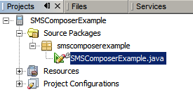
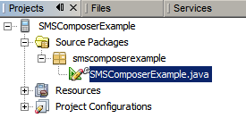
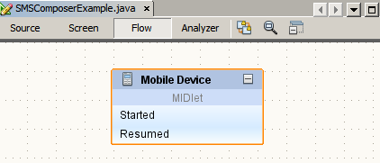

The Projects window should look like the following:

As the application runs, an emulator window opens and displays the application running in the default device emulator.

The Visual Mobile Designer (VMD) is a graphical interface within NetBeans Mobility that enables you to design mobile applications using drag and drop components. The VMD allows you to define the application flow and design your GUI using the components supplied by the IDE, or components you design yourself. The VMD contains many standard User Interface (UI) components that you can use to create applications such as Lists, Alerts, Forms and Images. It also includes custom components that simplify the creation of more complex features, such as Wait Screens, Splash Screens, Table Items and more.
The SMS Composer is a custom component that provides a mechanism and user interface to send short message using Short Message Service (SMS). This component utilizes the JSR-120 Wireless Messaging API. This API is not a part of the MIDP 2.0 specification so this custom component can only be deployed to devices that have built-in support for JSR-120.
This tutorial shows you how to use the SMS Composer component in a mobile application for Wireless Messaging API (WMA) enabled devices. You'll learn the basic features of this component, and how to send message using Short Message Service.
In addition to the SMS Composer custom component we also need to use two other MIDP components: Splash Screen and Alert.
Contents

To follow this tutorial, you need the software and resources listed below.
| Software or Resource | Version Required |
|---|---|
| NetBeans IDE with Java ME | Version 6.9 and later |
| Java Development Kit (JDK) | Version 6 and version 7 |
Before we begin, you might want to see final result of the tutorial.
Take the following steps to install the SMSComposerExample application:

Now that you have seen the SMS Composer component in action, let's go back to the beginning and create this application. To create the application, do the following:
SMSComposerExample
in the Project Name field. Change the Project Location to a directory on your system. From now on let's refer to this
directory as $PROJECTHOME. Note: The project folder contains all of your sources and project metadata, such as the project Ant script.
SMSComposerExample project in the Project Window, then choose File > New File (Ctrl-N). Under Categories, select Java. Under File Types, select Java Package. Click Next. smscomposerexample in the Package Name field. Click Finish. smscomposerexample package in the Project window, then choose File > New File (Ctrl-N). Under Categories, select MIDP. Under File Types, select Visual MIDlet. Click Next. SMSComposerExample into MIDlet Name and MIDP Class Name fields. Click Finish.
In the Flow Designer, click on the Start Point on the Mobile Device and drag it to the spalshScreen component. In the same manner, connect the components together as shown in the following graphic.

In the Resources category of the Navigator, find and right-click the task component, choose Go To Source from the popup menu. In the Source window, find section // write task-execution user code here" and replace it
with smsComposer.sendSMS();.
Press <F6> to Run the main project. Alternatively you could select Run > Run Main Project.
The NetBeans IDE provides API Javadocs for the SMSComposer component, as well as other components you can use in the VMD. To read the Javadocs for the SMSComposer component:
 ) in the popup window to view the detailed information about the SMSComposer component in your browser.
) in the popup window to view the detailed information about the SMSComposer component in your browser.